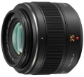

器材库 > APS画幅镜头 > Leica DG SUMMILUX 25/1.4 ASPH.

详细规格
镜头类型
标准镜头
发布日期
2011-06-13
厂家推荐价格
73,500.00 （日元）
焦距
25mm
等效35mm画幅焦距
50mm
最大光圈
f/1.4
最小光圈
f/16
视角（对角）
47°
镜头结构
9片/7组
非球面镜片
2片
光圈叶片
7片
最近对焦距离
30cm
最大放大倍率
0.11
滤镜口径
46mm
镜头卡口
Micro 4/3
防抖
否
颜色
黑色
尺寸
63×54.5mm
重量
200g
春树袋熊2015-06-28 16:214.5 分
操作性 4.00耐用性 4.50性价比 4.00解像力 5.00色彩还原 4.50机械结构 5.00
fiat20092015-02-04 15:104.58 分
操作性 5.00耐用性 4.50性价比 4.00解像力 5.00色彩还原 4.50机械结构 4.50
hanml19882012-08-06 03:314.42 分
操作性 4.00耐用性 4.50性价比 4.00解像力 5.00色彩还原 5.00机械结构 4.00
raysharp2012-05-18 10:274.58 分
操作性 4.50耐用性 4.00性价比 4.50解像力 5.00色彩还原 5.00机械结构 4.50
up1672012-03-14 19:454.42 分
操作性 4.50耐用性 4.50性价比 4.00解像力 4.50色彩还原 4.50机械结构 4.50
ikinari2012-01-30 10:364.33 分
操作性 4.00耐用性 4.00性价比 4.00解像力 5.00色彩还原 4.50机械结构 4.50
产品图 / 样片
评测 / 相关文章
- ［试用］说叁道肆——用M4/3、4/3系统拍片 （存档）
- ［试用］奥巴EM1+松下25/1.4东京三日走马观花 （存档）
- ［试用］M43，极繁至极简 （存档）
- ［试用］海外评测：松下DG SUMMILUX 25/1.4 （存档）
- ［试用］GX1拍美女--DG 25 1.4/14饼+ECU1 （存档）
- ［试用］松莱25/1.4开箱记 （存档）
- ［行情］镜头人气榜2011年第三十五期 （存档）
- ［行情］镜头人气榜2011年第三十四期 （存档）
- ［行情］镜头人气榜2011年第三十三期 （存档）
- ［行情］镜头人气榜2011年第三十二期 （存档）